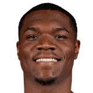
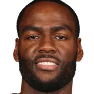

Played 2 seasons for 3 teams; his teams went 6–26 in his games.
Jump to: Record by opponent · Season by season · Teammate help
Compare Jalen Jones with…
Final NBA finish, season by season
Title Finals Other playoffs Missed playoffs. #1 = champion; the dashed line is last place that season. Each point opens that season's final standings.
All 30 teams ranked in 2017-18, his best finish (#27)Teammate help
 Dennis Smith0.11 season
Dennis Smith0.11 season Collin Sexton0.11 season
Collin Sexton0.11 season
Career
Career records (W–L, W − L, with and without) include 2026-27 games through Nov. 25, 2026; season counts and finishes are through 2025-26. Each card opens its board in the same scope. How we count.

Latest completed seasons
Season by season
Newest first; every header sorts. Final NBA finish is the team's rank among all teams that season (#1 = champion) and opens that season's standings. "Without him" uses the team-season window; the span line counts only the games between his first and last game for the team.
| 2018-19 | #28 of 30 | 19–63 23.2% | Missed playoffs | 16 of 82 | 3–13 18.8% | 16–50 24.2%span: 1–4, gap −1.3 | −5.5 | |
| 2017-18 | #7 of 30 | 48–34 58.5% | Lost conf semis 1–4 | 4 of 82 | 1–3 25.0% | 23–18 56.1%span: 11–8, gap −32.9 | −31.1 | |
| 2017-18 | #27 of 30 | 24–58 29.3% | Missed playoffs | 12 of 82 | 2–10 16.7% | 15–28 34.9%span: 7–17, gap −12.5 | −18.2 |
On/off, starts and close games
From the lineup data, 1996-97 on. On/off is net points per 100 possessions with him on the floor minus off, a different unit from the win-rate gaps. Started and off the bench are team records in those games; close games are those within 5 points in the last 5 minutes with him on the floor.
| 2018-19 | +12.9 | 3–13 18.8% | 0–1 0.0% | |
| 2017-18 | −15.8 | 1–3 25.0% | N/A | |
| 2017-18 | +0.4 | 2–10 16.7% | 1–4 20.0% |
Teammate help by season
Help this season = Teammates Score points for honors won that season by teammates who shared a game with him, with every teammate that adds to it. Only honors won in that same season count. How help works.
- 2018-19
 Cleveland
Collin Sexton All-Rookie 2nd0.12516 g
Cleveland
Collin Sexton All-Rookie 2nd0.12516 g
Help this season: 0.125 = 0.125 Collin Sexton
Other teammates (no honors that season): Jordan Clarkson 16 g, Alec Burks 16 g, Cedi Osman 16 g, Larry Nance Jr 14 g, Channing Frye 13 g, Jaron Blossomgame 12 g, Tristan Thompson 11 g, Matthew Dellavedova 10 g, Rodney Hood 8 g, Ante Zizic 6 g, Patrick McCaw 3 g, Cameron Payne 3 g, George Hill 2 g, David Nwaba 2 g
- 2017-18
 New Orleans
New Orleans
 Anthony Davis All-NBA 1stAll-StarAll-Def 1st63 g
Anthony Davis All-NBA 1stAll-StarAll-Def 1st63 g DeMarcus Cousins All-Star14 g
DeMarcus Cousins All-Star14 g Jrue Holiday All-Def 1st14 g
Jrue Holiday All-Def 1st14 g
Help this season: 8 = 6 Anthony Davis + 1 DeMarcus Cousins + 1 Jrue Holiday
Other teammates (no honors that season): Darius Miller 4 g, E'Twaun Moore 4 g, Jameer Nelson 3 g, Ian Clark 3 g, Dante Cunningham 3 g, Rajon Rondo 3 g, Charles Cooke 3 g, Cheick Diallo 3 g, Tony Allen 1 g, Josh Smith 1 g, Omer Asik 1 g
- 2017-18
 Dallas
Dennis Smith All-Rookie 2nd0.1259 g
Dallas
Dennis Smith All-Rookie 2nd0.1259 g
Help this season: 0.125 = 0.125 Dennis Smith
Other teammates (no honors that season): Maxi Kleber 12 g, Yogi Ferrell 12 g, Kyle Collinsworth 11 g, Dwight Powell 10 g, Doug McDermott 8 g, Dirk Nowitzki 8 g, Harrison Barnes 7 g, Johnathan Motley 7 g, Salah Mejri 7 g, Jose Juan Barea 6 g, Aaron Harrison 6 g, Dorian Finney-Smith 5 g, Wesley Matthews 4 g, Devin Harris 1 g and 2 more
Record against each opponent
Regular season, through 2025-26 (2026-27 games not included): 32 games, 6–26, against 22 franchises.
Grouped by franchise (named as today); game lists keep each team's name that season. Filters and the tab are kept in the URL, so a filtered view can be shared.
| Games list | |||||||
|---|---|---|---|---|---|---|---|
| 3 | 0–3 | 0.0% | −3 | N/A | 2017-18 to 2018-19 | ||
| 3 | 1–2 | 33.3% | −1 | N/A | 2017-18 to 2018-19 | ||
| 2 | 1–1 | 50.0% | 0 | N/A | 2017-18 to 2018-19 | ||
| 2 | 0–2 | 0.0% | −2 | N/A | 2017-18 to 2018-19 | ||
| 2 | 0–2 | 0.0% | −2 | N/A | 2018-19 | ||
| 2 | 0–2 | 0.0% | −2 | N/A | 2018-19 | ||
| 2 | 0–2 | 0.0% | −2 | N/A | 2017-18 to 2018-19 | ||
| 2 | 2–0 | 100.0% | +2 | N/A | 2017-18 to 2018-19 | ||
| 1 | 0–1 | 0.0% | −1 | N/A | 2018-19 | ||
| 1 | 0–1 | 0.0% | −1 | N/A | 2018-19 | ||
| 1 | 1–0 | 100.0% | +1 | N/A | 2017-18 | ||
| 1 | 0–1 | 0.0% | −1 | N/A | 2017-18 | ||
| 1 | 0–1 | 0.0% | −1 | N/A | 2017-18 | ||
| 1 | 0–1 | 0.0% | −1 | N/A | 2018-19 | ||
| 1 | 0–1 | 0.0% | −1 | N/A | 2017-18 | ||
| 1 | 0–1 | 0.0% | −1 | N/A | 2017-18 | ||
| 1 | 0–1 | 0.0% | −1 | N/A | 2018-19 | ||
| 1 | 0–1 | 0.0% | −1 | N/A | 2018-19 | ||
| 1 | 1–0 | 100.0% | +1 | N/A | 2018-19 | ||
| 1 | 0–1 | 0.0% | −1 | N/A | 2017-18 | ||
| 1 | 0–1 | 0.0% | −1 | N/A | 2017-18 | ||
| 1 | 0–1 | 0.0% | −1 | N/A | 2017-18 |
Rows add up to his career record in his games. A playoff series counts when he played in it; early round-robin games show as games only. How we count.
Arrival and departure
Team wins per 82 games the season before he arrived vs his first season there, and his last season vs the season after he left. He leaves a team only when his next season with games is for another team (or he never plays again); whole seasons he missed and came back from are one "Missed" row with the team's record without him. Per 82 so short seasons compare fairly. These are team records, not a measure of what he did.
| Left | after 2018-19 | 2018-19: 19–63 19.0 per 82 | 2019-20: 19–46 24.0 per 82 without him | +5.0 wins | |
| Arrived | 2018-19 | 2017-18: 50–32 50.0 per 82 | 2018-19: 19–63 19.0 per 82 | −31.0 wins | |
| Left | after 2017-18 | 2017-18: 48–34 48.0 per 82 | 2018-19: 33–49 33.0 per 82 without him | −15.0 wins | |
| Left | after 2017-18 | 2017-18: 24–58 24.0 per 82 | 2018-19: 33–49 33.0 per 82 without him | +9.0 wins | |
| Debut | 2017-18 | 2016-17: 34–48 34.0 per 82 | 2017-18: 48–34 48.0 per 82 | +14.0 wins | |
| Arrived | 2017-18 | 2016-17: 33–49 33.0 per 82 | 2017-18: 24–58 24.0 per 82 | −9.0 wins |
Seasons split between teams
Each team's record before his first game for it, inside his window (games with and without him) and after his last game, in the seasons he played for two or more teams.
| 2017-18 | Oct. 28, 2017 to Dec. 11, 2017 | N/A | 24–21 53.3% | 24–13 64.9% | 4 | |
| 2017-18 | Jan. 22, 2018 to April 10, 2018 | 7–20 25.9% | 17–38 30.9% | N/A | 12 |
With and without his teammates
His 12 teammates with the most regular-season games together. "Together" is the team's record in the games both played for it; "Without him" is the team's record in the games Jalen Jones played for that team while the teammate was on it (between the teammate's first and last game for the team, the appearance span) and the teammate did not play. Fewer than 20 games without him: no gap. Games through Nov. 25, 2026. How we count.
 Cedi OsmanCleveland 2018-19
Cedi OsmanCleveland 2018-19- Together
- 3–13 18.8%
- Without him
- N/A N/A
- Gap
- Too few games without him
- Collin SextonCleveland 2018-19
- Together
- 3–13 18.8%
- Without him
- N/A N/A
- Gap
- Too few games without him

Alec BurksCleveland 2018-19- Together
- 3–13 18.8%
- Without him
- N/A N/A
- Gap
- Too few games without him
 Jordan ClarksonCleveland 2018-19
Jordan ClarksonCleveland 2018-19- Together
- 3–13 18.8%
- Without him
- N/A N/A
- Gap
- Too few games without him
 Larry Nance JrCleveland 2018-19
Larry Nance JrCleveland 2018-19- Together
- 3–11 21.4%
- Without him
- 0–2 0.0%
- Gap
- Too few games without him
 Channing FryeCleveland 2018-19
Channing FryeCleveland 2018-19- Together
- 1–12 7.7%
- Without him
- 2–1 66.7%
- Gap
- Too few games without him
 Yogi FerrellDallas 2017-18
Yogi FerrellDallas 2017-18- Together
- 2–10 16.7%
- Without him
- N/A N/A
- Gap
- Too few games without him
- Jaron BlossomgameCleveland 2018-19
- Together
- 2–10 16.7%
- Without him
- 0–3 0.0%
- Gap
- Too few games without him
 Maxi KleberDallas 2017-18
Maxi KleberDallas 2017-18- Together
- 2–10 16.7%
- Without him
- N/A N/A
- Gap
- Too few games without him
- Kyle CollinsworthDallas 2017-18
- Together
- 2–9 18.2%
- Without him
- 0–1 0.0%
- Gap
- Too few games without him
 Tristan ThompsonCleveland 2018-19
Tristan ThompsonCleveland 2018-19- Together
- 2–9 18.2%
- Without him
- 1–4 20.0%
- Gap
- Too few games without him
 Matthew DellavedovaCleveland 2018-19
Matthew DellavedovaCleveland 2018-19- Together
- 1–9 10.0%
- Without him
- 0–2 0.0%
- Gap
- Too few games without him